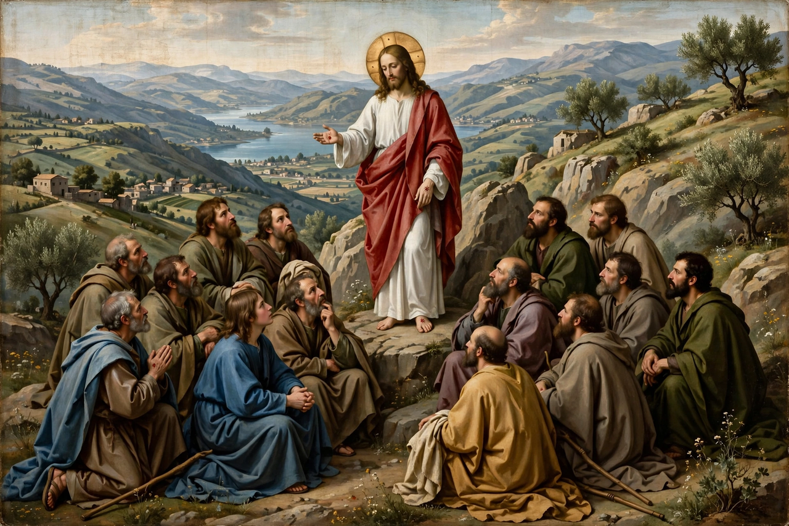

From Wikipedia, the free encyclopedia
| Great Commission | |
|---|---|
 | |
| Source | Matthew 28:16–20 (fullest form) |
| Parallels | Mark 16:14–18; Luke 24:44–49; Acts 1:4–8; John 20:19–23 |
| Setting | After the Resurrection, Galilee |
In Christianity, the Great Commission is the instruction of the resurrected Jesus Christ to his disciples to spread the gospel to all nations. It has become a key tenet of Christian theology, especially in missionary work and evangelism. The most familiar version is found in the closing passage of the Gospel of Matthew:
"All authority in heaven and on earth has been given to me. Therefore go and make disciples of all nations, baptizing them in the name of the Father and of the Son and of the Holy Spirit, and teaching them to obey everything I have commanded you. And surely I am with you always, to the very end of the age." — Matthew 28:18–20
Parallel commissions appear in the other Gospels and Acts: Mark's longer ending commands preaching "to all creation" and links belief with baptism; Luke emphasizes repentance and forgiveness preached in Christ's name "beginning at Jerusalem," with the disciples as witnesses; Acts 1:8 summarizes the geographic expansion "in Jerusalem, and in all Judea and Samaria, and to the ends of the earth"; and John 20:21–23 has Jesus sending the disciples as the Father sent him, breathing the Holy Spirit on them.
The Trinitarian baptismal formula in Matthew's version is unique in the New Testament and has been central to Christian baptismal practice. The commission is often contrasted with the earlier "Limited Commission" (Matthew 10), directed only to Israel. In the modern missionary movement — from William Carey in the 1790s onward — the Great Commission became the classic biblical mandate for missions, and it remains foundational for evangelical churches, while mainline, Catholic, and Orthodox traditions read it alongside the church's sacramental and communal life. Some scholars debate whether Matthew's original ending contained the full text, and full preterists argue the commission was fulfilled in the first century; the majority view treats it as an ongoing charge to the church.